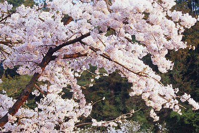

Japan | Travel
Brief introduction of all Hokkaido has to offer
Among Japan's main islands, Hokkaido is the second largest and the northernmost. It is particularly interesting for adventurous travellers; who enjoy nature more than culture.
There are several airports spread across the prefecture, but it may be easiest to land in New Chitose Airport ~ it is a 1-hour trainride away from the capital Sapporo.
It is easiest to explore Hokkaido by car. There are trains lines, but not many.
To provide an indication of travel times, this collection of sights includes travel time from Saporo for each destination.
Hokkaido has mild summers and cold winters. The island is particularly crowded in the summer, when the Japanese themselves like to escape warmer climates and the rainy season.

Cherry Blossom seasons start around the end of May. Check the yearly forecast however.
There are cherry blossoms trees in Hokkaido, and they do bloom. Nijukken Road is a 2-hour drive from Sapporo that includes 17 species of cherry blossom trees. Aobagaoka park (3hrs away) and Matsumae castle (5hrs) might also be worth your while.
Hokkaido hosts a variety of wildlife. Driving around the island, it is rather likely to spot a Sika deer or Fox. A less desired encounter might be with a Eurasian brown bear. They have attacked people before. But, with necessary precautions your risk can be diminished.
Less common species include the white-tailed eagle, lizuma, and the Blakiston's fish owl. At whale watching tours, one could spot Minke, Sperm and Killer whales besides seals and dolphins.
Folding 1000 origami cranes is believed to bring you luck, as this is what the animal symbolizes.
The Japanese are particularly fond of the Red-crowned crane, which is a symbol of longevity and luck. They can only be found in Hokkaido, but are beloved nation-wide. To spot these cranes, one must venture to Kushiro shitsugen national park (5 hrs from Sapporo), where they live all year around. You might like to try your luck at Otawa Bridge, which is a popular spotting place.
Compared to areas like Kyoto, Hokkaido's cultural scene is not abundantly rich. There are some particularly interesting museums such as the Sapporo art museum, the Hokkaido museum of Northern Peoples (5hrs drive from Sapporo), the Nikka-Yoichi whisky distillery (1hr) and the sake brewery museum (in Sapporo).
Being Japan's biggest seafood distributor, Hokkaido is known for its fresh seafood. There are several food festivals, such as the Sapporo autumn fest and the Hokkaido shrine festival. Japanese vending machines can be found anywhere, and allow for refreshments on your roadtrips.
Hot springs are spread all across Hokkaido. Additionally, most Ryokan (hotels that feature tatami mats) have hot springs or man-made spas. However, they require full nakedness and a cleaning ritual.
While there is much left to be explored, we should add a couple mentions to this synopsis on Hokkaido travels. These stand out in terms of beauty or sheer notability.